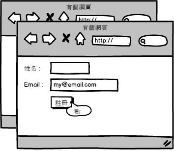

<!DOCTYPE html>
<html>
<head><meta name="generator" content="Hexo 3.8.0">
  <meta charset="utf-8">
  <title>單元測試 | The name is Alex</title>
  <meta name="viewport" content="width=device-width,initial-scale=1,maximum-scale=1,minimum-scale=1">
  <meta name="description" content="本章介紹程式設計師應都該知道的，有關於單元測試的基本概念。當然我們常常會說：「這功能我測過了」。但專案功能要求的「測過了」跟我們說的「測過了」怎麼還是會有出入呢？  程式設計師最原始的測試經驗 單元測試 (Unit test) 的定義 評估你的（單元）測試 比較整合測試與單元測試 撰寫測試時的建議  程式設計師最原始的測試經驗筆者在尚未接觸單元測試以前，也會非常細心的測試自己的程式。以開發一個網站">
<meta name="keywords" content="unit-testing">
<meta property="og:type" content="article">
<meta property="og:title" content="單元測試">
<meta property="og:url" content="http://alexpacer.github.io/posts/ffc29105/index.html">
<meta property="og:site_name" content="The name is Alex">
<meta property="og:description" content="本章介紹程式設計師應都該知道的，有關於單元測試的基本概念。當然我們常常會說：「這功能我測過了」。但專案功能要求的「測過了」跟我們說的「測過了」怎麼還是會有出入呢？  程式設計師最原始的測試經驗 單元測試 (Unit test) 的定義 評估你的（單元）測試 比較整合測試與單元測試 撰寫測試時的建議  程式設計師最原始的測試經驗筆者在尚未接觸單元測試以前，也會非常細心的測試自己的程式。以開發一個網站">
<meta property="og:locale" content="tw">
<meta property="og:image" content="http://alexpacer.github.io/posts/ffc29105/ch4_001-1.png">
<meta property="og:image" content="http://alexpacer.github.io/posts/ffc29105/ch4_002.png">
<meta property="og:image" content="http://alexpacer.github.io/posts/ffc29105/ch4_003.png">
<meta property="og:updated_time" content="2019-10-02T03:53:13.171Z">
<meta name="twitter:card" content="summary">
<meta name="twitter:title" content="單元測試">
<meta name="twitter:description" content="本章介紹程式設計師應都該知道的，有關於單元測試的基本概念。當然我們常常會說：「這功能我測過了」。但專案功能要求的「測過了」跟我們說的「測過了」怎麼還是會有出入呢？  程式設計師最原始的測試經驗 單元測試 (Unit test) 的定義 評估你的（單元）測試 比較整合測試與單元測試 撰寫測試時的建議  程式設計師最原始的測試經驗筆者在尚未接觸單元測試以前，也會非常細心的測試自己的程式。以開發一個網站">
<meta name="twitter:image" content="http://alexpacer.github.io/posts/ffc29105/ch4_001-1.png">
  <link rel="icon" href="/favicon.ico">
  

  <link rel="stylesheet" href="https://cdnjs.cloudflare.com/ajax/libs/bulma/0.6.1/css/bulma.min.css">
  <link rel="stylesheet" href="https://maxcdn.bootstrapcdn.com/font-awesome/4.7.0/css/font-awesome.min.css">
  <link rel="stylesheet" href="/css/style.css">
  
    <link rel="stylesheet" href="/css/prism.css">
  
  
<script type="application/ld+json">
  {
  "@context": "http://schema.org",
  "@type": "BlogPosting",
  "headline": "單元測試",
  "name": "單元測試",
  "datePublished": "2017-06-30T15:57:07.000Z",
  "dateModified": "2019-10-02T03:53:13.171Z",
  "mainEntityOfPage": {
    "@type": "WebPage",
    "@id": "http://alexpacer.github.io/posts/ffc29105/index.html"
  },
  "author": {
    "@type": "Person",
    "name": "Alex Wei",
    "image": "/images/avatar.jpg"
  },
  "publisher": {
    "@type": "Organization",
    "name": "Alex Wei",
    "logo": {
      "@type": "ImageObject",
      "url": "/images/avatar.jpg"
    }
  }
}
</script>

  
  
    <script src="/js/prism.js"></script>
  
  <!-- <link href="/css/prism.css" rel="stylesheet" /> -->
  <link href="/css/prism-line-numbers.css" rel="stylesheet">
<link rel="stylesheet" href="/css/prism-twilight.css" type="text/css"></head>
</html>
<body>
  

  <header class="navbar" role="navigation" aria-label="main navigation">
  <div class="navbar-brand">
    <a href="/" class="navbar-item">
      The name is Alex
    </a>
  </div>
</header>

  <div class="container">
    <div class="columns">
      <div class="main column is-8">
        <article class="post">
  <figure class="post-thumbnail">
    

  </figure>
  <span>2017-06-30
</span>
  <h1 class="title">單元測試</h1>
  
  <div class="tags">
    
      <a class="tag" href="/tags/unit-testing/">unit-testing</a>
    
  </div>


  <div class="content">
    <p>本章介紹程式設計師應都該知道的，有關於單元測試的基本概念。當然我們常常會說：「這功能我測過了」。但專案功能要求的「測過了」跟我們說的「測過了」怎麼還是會有出入呢？</p>
<ul>
<li>程式設計師最原始的測試經驗</li>
<li>單元測試 (Unit test) 的定義</li>
<li>評估你的（單元）測試</li>
<li>比較整合測試與單元測試</li>
<li>撰寫測試時的建議</li>
</ul>
<h1 id="程式設計師最原始的測試經驗"><a href="#程式設計師最原始的測試經驗" class="headerlink" title="程式設計師最原始的測試經驗"></a>程式設計師最原始的測試經驗</h1><p>筆者在尚未接觸單元測試以前，也會非常細心的測試自己的程式。以開發一個網站來舉例：</p>
<p>我的網站有一個簡單的表單頁面讓使用者註冊</p>
<p></p>
<p>假設我想測試的是伺服器端有沒有在沒輸入姓名的情況下擋下使用者送出表單的行為。那麼，我打開註冊頁面後，就故意不打姓名然後點註冊按鈕來測試看看</p>
<p></p>
<p>然後看到警告視窗我就會滿意的說我的程式有阻擋未完成的表單，並且也測試過了（？）</p>
<p></p>
<p>送給測試工程師（QA Engineer）測試的結果令筆者為之氣結：『表單沒有驗證』。原來筆者沒有測試到輸入一個空格在姓名欄位就送出表單，只檢查姓名欄位長度而已：</p>
<pre class=" language-csharp"><code class="language-csharp"><span class="token keyword">public</span> ActionResult <span class="token function">Register</span><span class="token punctuation">(</span><span class="token keyword">string</span> name<span class="token punctuation">,</span> <span class="token keyword">string</span> email<span class="token punctuation">)</span><span class="token punctuation">{</span>
    <span class="token keyword">if</span><span class="token punctuation">(</span>name<span class="token punctuation">.</span>length <span class="token operator">></span> <span class="token number">0</span><span class="token punctuation">)</span><span class="token punctuation">{</span>
        <span class="token comment" spellcheck="true">// 處理表單</span>
    <span class="token punctuation">}</span>
<span class="token punctuation">}</span>
</code></pre>
<p>如果我們一貫用上述的方式測試我們的程式，不但效率不好，更糟糕的是測試後通常仍然過不了測試工程師（QA Engineer）的刁鑽古怪測試案例。</p>
<p>撰寫程式的工程師，也沒有多餘的時間把測試工程師準備好的測試案例都測過一次（這不應該是程式設計師花大部分時間在做的事情啊）。</p>
<p>那麼，身為程式設計師，我們能做什麼來讓我們有自信的保證我們做出成品的品質呢？</p>
<h1 id="單元測試-Unit-test-的定義"><a href="#單元測試-Unit-test-的定義" class="headerlink" title="單元測試 (Unit test) 的定義"></a>單元測試 (Unit test) 的定義</h1><p>為什麼是「單元」呢？寫過專案的人應該都了解，一個完整的專案是由許多小的細節環構而成的。就像車子的引擎有無數的小零件組合而成。為了確認每一個程式裡的功能都能各司其職的運作如常，我們在測試時，會將我們的程式，以「單元」來劃分。一個「單元」（Unit），就是系統裡一個最小的「工作單元」，它有可能只是一個函式（Method），類別（Class）等可執行的程式單位。 <a href="http://artofunittesting.com/definition-of-a-unit-test/" target="_blank" rel="noopener">Unit Test - Definition</a></p>
<p>「單元測試」即是指可以被自動執行的測試程式，他將會透過公開的介面來執行你撰寫的程式，並依照你預期的執行結果或行為驗證。</p>
<p>理想的情況下，當程式在持續的開發時，對應的單元測試的「質」與「量」也會相對的增加。不斷的累積下，工程師將會更依賴每次執行測試的結果來判斷是否無誤。當測試程式反映出錯誤的時候程式設計師就有此依據來判斷是程式的撰寫問題，或者有可能是，當初撰寫的測試程式已經不符合預期的結果而需要修改。</p>
<h1 id="為什麼單元測試非寫不可"><a href="#為什麼單元測試非寫不可" class="headerlink" title="為什麼單元測試非寫不可"></a>為什麼單元測試非寫不可</h1><p>舉一個簡單的案例，相信身為程式設計師的各位都有過類似的經驗：</p>
<p>你被指派接手一個已開發完的系統，你的工作是維護它，修改已知和未知的問題並且增加新功能。但當你研究了幾天它的原始碼發現裡面博大精深難以理解的時候，能幫助你的有誰呢？</p>
<ul>
<li>原作者</li>
<li>文件</li>
</ul>
<p>原作者可能可以提供你相當的協助，但相信不會花太多時間來解釋細節給你聽。而文件或許從專案經理組了專案團隊開始做專案以後就沒人去更新過，這時後最有幫助的，應該是該系統的「單元測試」（當然，我是說如果有的話）。</p>
<p>單元測試的功用不只是測試系統執行的正確性而已，而是被測試的「單元」程式所包含的程式邏輯的正確性。換句話說，一個單元測試其實包含了正確的邏輯。</p>
<h2 id="訂單系統的例子"><a href="#訂單系統的例子" class="headerlink" title="訂單系統的例子"></a>訂單系統的例子</h2><p>假設我們撰寫的訂單系統裡有一個結帳的功能，在系統使用者選購網頁上的產品後，結帳時幫使用者計算需支付的金額：</p>
<pre class=" language-csharp"><code class="language-csharp"><span class="token keyword">public</span> <span class="token keyword">decimal</span> <span class="token function">Checkout</span><span class="token punctuation">(</span>List<span class="token operator">&lt;</span>Order<span class="token operator">></span> orders<span class="token punctuation">)</span><span class="token punctuation">{</span>
    <span class="token keyword">var</span> total <span class="token operator">=</span> orders<span class="token punctuation">.</span><span class="token function">Select</span><span class="token punctuation">(</span>x <span class="token operator">=</span><span class="token operator">></span> x<span class="token punctuation">.</span>Price<span class="token punctuation">)</span><span class="token punctuation">.</span><span class="token function">Sum</span><span class="token punctuation">(</span><span class="token punctuation">)</span><span class="token punctuation">;</span>
    <span class="token keyword">return</span> total<span class="token punctuation">;</span>
<span class="token punctuation">}</span>
</code></pre>
<p>現在的功能的需求是：</p>
<blockquote>
<p>把訂單裡每個項目的價格加總後回傳</p>
</blockquote>
<p>相對應的測試程式應該準備好一個訂單物件（<code>List</code>）並傳入這個 <code>Checkout()</code> 的函式裡去執行，然後取得運算結果後與預期的計算結果比對。</p>
<p>假設我們的程式需求變更了，改成：</p>
<blockquote>
<p>把訂單裡每個項目的價錢<code>折扣後</code>，加總回傳</p>
</blockquote>
<pre class=" language-csharp"><code class="language-csharp"><span class="token keyword">public</span> <span class="token keyword">decimal</span> <span class="token function">Checkout</span><span class="token punctuation">(</span>List<span class="token operator">&lt;</span>Order<span class="token operator">></span> orders<span class="token punctuation">)</span><span class="token punctuation">{</span>
    <span class="token keyword">var</span> total <span class="token operator">=</span> orders<span class="token punctuation">.</span><span class="token function">Select</span><span class="token punctuation">(</span>x <span class="token operator">=</span><span class="token operator">></span> x<span class="token punctuation">.</span>Price <span class="token operator">-</span> <span class="token punctuation">(</span>x<span class="token punctuation">.</span>Price <span class="token operator">*</span> x<span class="token punctuation">.</span>Discount<span class="token punctuation">)</span><span class="token punctuation">)</span><span class="token punctuation">.</span><span class="token function">Sum</span><span class="token punctuation">(</span><span class="token punctuation">)</span><span class="token punctuation">;</span>
    <span class="token keyword">return</span> total<span class="token punctuation">;</span>
<span class="token punctuation">}</span>
</code></pre>
<p>修改後的程式同樣的拿我們之前撰寫的測試程式去測試，出錯的測試結果就會告訴我們：我們在單元測試裡的預期的結果跟我們撰寫的程式是有出入的。</p>
<p>這時後我們檢視單元測試會發現並沒有<code>折扣</code>這樣的商業邏輯。我們就可以針對這點，來就程式的需求調整系統程式或者是單元測試。以求兩者皆符合我們目前專案的<code>結帳功能</code>的需求。</p>
<h1 id="評估你的（單元）測試"><a href="#評估你的（單元）測試" class="headerlink" title="評估你的（單元）測試"></a>評估你的（單元）測試</h1><p>「單元測試」有一些獨特的特徵，如果測試程式不符合以下任一點的話，那麼我們應該將他歸類為「整合測試」：</p>
<ul>
<li>可快速被執行</li>
<li>可完全自動化</li>
<li>可完全掌控被測試的程式，利用注入偽造（Mocking）與模擬（Sutbbing）的方式來做出假的資料與行為，讓被測試的程式在沒有任何相依模組的載入下一樣能被測試程式執行</li>
<li>不需要依照定義好的順序執行，換句話說，各個單元測試都應該有自己的獨立性</li>
<li>直接在記憶體裡執行，也就是不依賴任何資料庫或是檔案存取</li>
<li>使用一致的數值與資料來執行測試，使用亂數來產生資料是整合測試時才做的事</li>
<li>每個單元測試都專注在單一的邏輯概念即可</li>
<li>易讀性</li>
<li>易維護性。同上，測試程式將會被許多合作的工程師閱讀與維護，寫出看的懂的測試程式很重要</li>
<li>可靠。理想的狀況是，你可以只看測試程式與測試結果就大概知道，有通過測試的程式如何「正確」，與沒通過測試的程式是如何「不正確」</li>
</ul>
<p>以上幾點不只可以驗證測試程式，相對的也可以拿來評估要被測試的程式。</p>
<p>撰寫測試時，可以由上列出的特徵來判斷你的程式是不是可以寫出「單元測試」。如果程式無法寫出「單元測試」的話，那麼表示程式的結構可能沒有做好模組分離或是抽離相依性等等的基礎建設。如果系統持續如此開發下去的話，系統的延展性與維護性都將會面臨較大的困難。考慮到以後的日子，越早重構程式，往後的日子越省事。</p>
<h1 id="比較整合測試與單元測試"><a href="#比較整合測試與單元測試" class="headerlink" title="比較整合測試與單元測試"></a>比較整合測試與單元測試</h1><p>上一章節提到的「整合測試」與「單元測試」，與用汽車引擎來類比「單元測試」就像引擎上的小零件。那麼「整合測試」我們也可以類比成測試整個引擎的運轉狀況。這樣的測試要的是每一個引擎上的小零件湊在一起運轉時的功能是不是能如我們所預期。</p>
<p>簡單的概念是，如果「整合測試」失敗的話，引擎理的任何一個零件，或是任何的零件之間互動的因素都有可能造成測試失敗。反觀「單元測試」，測試失敗時我們可以由測試案例得知是哪一個零件有問題，進而修復。</p>
<p>「整合測試」的特徵是：</p>
<ul>
<li>一次測試兩個以上互相依賴的單元（模組）</li>
<li>預期功能性的測試結果</li>
<li>測試需要依賴網路，資料庫或實體檔案存取</li>
<li>需要設定執行環境</li>
</ul>
<p>與「單元測試」比較起來，整合測試一樣應該是要可以自動化＆可以重複被執行，但差別在於整合測試通常需要設定好程式執行的環境，然後讓程式在執行時，透過程式提供的介面來執行需要被測試的程式。也是因為這樣的關係，「整合測試」通常在執行上需要比「單元測試」花更多時間值執行，也相對的需要更多時間準備測試資料。</p>
<p>同時，整合測試出錯時，有時候並不一定表示程式是有問題的，錯誤的測試環境設定也一樣可能導致整合測試失敗。我們可以透過整合測試的過程來確保程式在各個環境下都可以正常執行，並且同時驗證環境設定是否正確。</p>
<h1 id="撰寫測試時的建議"><a href="#撰寫測試時的建議" class="headerlink" title="撰寫測試時的建議"></a>撰寫測試時的建議</h1><p>撰寫單元測試當然是程式設計師的工作，自己寫的程式還是得自己才懂得怎麼才能測出問題。「單元測試」的特點就是易於撰寫與執行。因為「單元」應該要是一小段程式，所以幾行的測試程式應該就要可以寫完單元測試。</p>

  </div>
  
<nav class="footer-nav">
  
    <div class="footer-nav__prev">
      <div class="footer-nav__label">
        較新的那篇
      </div>
      <a href="/posts/aef35089/">
        初試 Dapper
      </a>
    </div>
  
  
    <div class="footer-nav__next">
      <div class="footer-nav__label">
        較舊的那篇
      </div>
      <a href="/posts/fb91083f/">
        佈署 Rails App 的一些想法
      </a>
    </div>
  
</nav>


</article>


      </div>
      <div class="sidebar column is-4">
        <aside>
  
    <aside class="search widget">
  <form action="//google.com/search" method="get" accept-charset="UTF-8" class="search-form" target="_blank">
    <div class="control has-icons-right">
      <input type="search" name="q" class="input" placeholder="搜尋">
      <span class="icon is-small is-right">
        <i class="fa fa-search"></i>
      </span>
    </div>
    <input type="hidden" name="sitesearch" value="http://alexpacer.github.io">
  </form>
</aside>

  
    <div class="widget-wrap">
  <div class="widget-title">作者</div>
  <aside class="profile media widget">
    <figure class="profile-avatar media-left">
      
    </figure>
    <div class="media-content">
      <p>
        <strong>
          <span>Alex Wei</span>
          <span class="icon">
            <a href="https://github.com/alexpacer" target="_blank">
              <i class="fa fa-github"></i>
            </a>
          </span>
        </strong>
        <br>
        <span></span>
      </p>
    </div>
  </aside>
</div>

  
    
  <div class="widget-wrap">
    <div class="widget-title">最近更新</div>
    <div class="widget">
      <ul class="recent-post">
        
          <li class="recent-post-item media">
            <figure class="media-left">
              

            </figure>
            <div class="media-content">
              <p class="">
                <a href="/posts/d974dd78/" class="">
                  WebDeployment 的一些前置設定
                </a>
              </p>
              <p class="">
                <small>
                  2019-06-21

                </small>
              </p>
            </div>
          </li>
        
          <li class="recent-post-item media">
            <figure class="media-left">
              

            </figure>
            <div class="media-content">
              <p class="">
                <a href="/posts/904aaacf/" class="">
                  ASP.net Core (2.2) 整理 1 :: [Auth &amp; Authorize]
                </a>
              </p>
              <p class="">
                <small>
                  2019-02-14

                </small>
              </p>
            </div>
          </li>
        
          <li class="recent-post-item media">
            <figure class="media-left">
              

            </figure>
            <div class="media-content">
              <p class="">
                <a href="/posts/17bf5966/" class="">
                  Windows Server 安裝 RabbitMQ
                </a>
              </p>
              <p class="">
                <small>
                  2018-12-12

                </small>
              </p>
            </div>
          </li>
        
          <li class="recent-post-item media">
            <figure class="media-left">
              

            </figure>
            <div class="media-content">
              <p class="">
                <a href="/posts/ebf2f33a/" class="">
                  Redis cluster on CentOs
                </a>
              </p>
              <p class="">
                <small>
                  2018-04-27

                </small>
              </p>
            </div>
          </li>
        
          <li class="recent-post-item media">
            <figure class="media-left">
              

            </figure>
            <div class="media-content">
              <p class="">
                <a href="/posts/761f59e/" class="">
                  智付通金流整合
                </a>
              </p>
              <p class="">
                <small>
                  2017-12-12

                </small>
              </p>
            </div>
          </li>
        
      </ul>
    </div>
  </div>


  
    
  <div class="widget-wrap">
    <h3 class="widget-title">標籤雲</h3>
    <div class="widget">
      <a href="/tags/net/" style="font-size: 10px;">.net</a> <a href="/tags/IIS-WebDeploy/" style="font-size: 10px;">IIS, WebDeploy</a> <a href="/tags/asp-net-core/" style="font-size: 10px;">asp.net-core</a> <a href="/tags/elk/" style="font-size: 10px;">elk</a> <a href="/tags/nginx/" style="font-size: 10px;">nginx</a> <a href="/tags/rabbit-mq/" style="font-size: 10px;">rabbit-mq</a> <a href="/tags/rails/" style="font-size: 20px;">rails</a> <a href="/tags/redis/" style="font-size: 10px;">redis</a> <a href="/tags/ruby/" style="font-size: 10px;">ruby</a> <a href="/tags/unit-testing/" style="font-size: 10px;">unit-testing</a>
    </div>
  </div>


  
    
  <div class="widget-wrap">
    <h3 class="widget-title">封存</h3>
    <div class="widget">
      <ul class="archive-list"><li class="archive-list-item"><a class="archive-list-link" href="/archives/2019/06/">June 2019</a><span class="archive-list-count">1</span></li><li class="archive-list-item"><a class="archive-list-link" href="/archives/2019/02/">February 2019</a><span class="archive-list-count">1</span></li><li class="archive-list-item"><a class="archive-list-link" href="/archives/2018/12/">December 2018</a><span class="archive-list-count">1</span></li><li class="archive-list-item"><a class="archive-list-link" href="/archives/2018/04/">April 2018</a><span class="archive-list-count">1</span></li><li class="archive-list-item"><a class="archive-list-link" href="/archives/2017/12/">December 2017</a><span class="archive-list-count">2</span></li><li class="archive-list-item"><a class="archive-list-link" href="/archives/2017/06/">June 2017</a><span class="archive-list-count">4</span></li></ul>
    </div>
  </div>


  
    <div class="widget-wrap">
    <h3 class="widget-title">連結</h3>
    <div class="widget">
        <ul style="list-style: circle">
            <li>
                <a href="https://blog.ryantseng.me/" class="">
                    Ryan - 不務正業 全端 開發記事
                </a>
            </li>

            <li>
                <a href="https://eugenesu0515.github.io/Blog/" class="">
                    Eugene
                </a>
            </li>
        </ul>
    </div>
</div>

  
</aside>

      </div>
    </div>
  </div>
  <footer class="footer">
  <div class="container">
    <div class="content has-text-centered">
      <p>
        <a rel="license" href="http://creativecommons.org/licenses/by-nc/4.0/"></a><br>This blog is licensed under a <a rel="license" href="http://creativecommons.org/licenses/by-nc/4.0/">Creative Commons Attribution-NonCommercial 4.0 International License</a>.
        

        <!-- 
          <br />
          <span xmlns:cc="http://creativecommons.org/ns#" property="cc:attributionName">Alex Wei</span>'s Workを著作者とするこの作品は<a rel="license" href="http://creativecommons.org/licenses/by-sa/4.0/">クリエイティブ・コモンズの 表示 - 継承 4.0 国際 ライセンス</a>で提供されています。 -->
      </p>
    </div>
  </div>
</footer>


  
</body>
</html>
